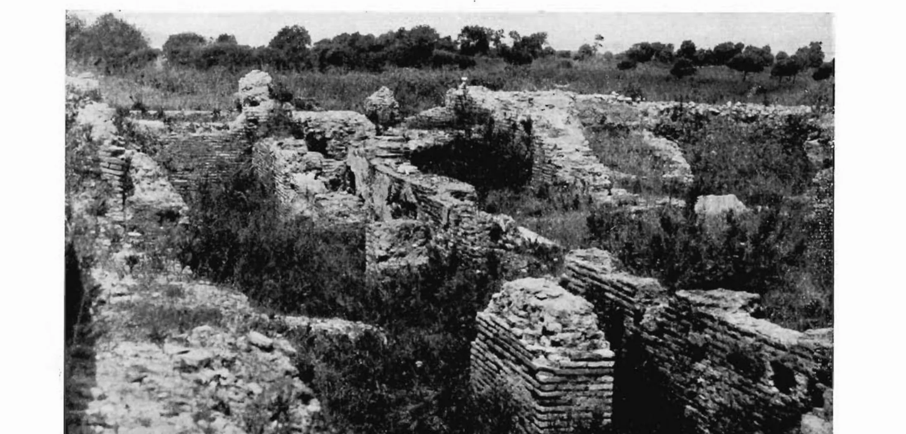
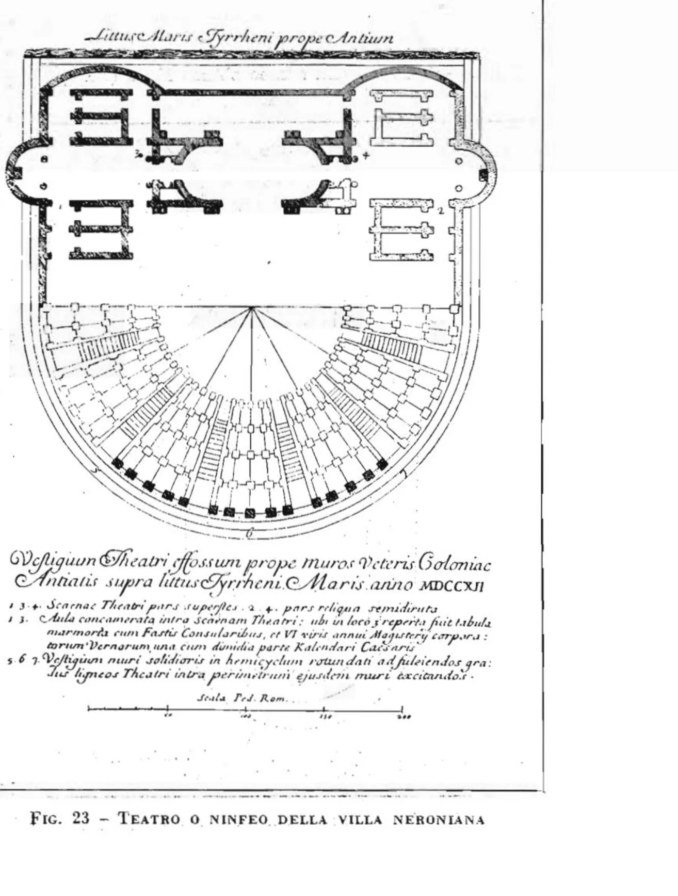

Il teatro che guarda il mare
Trenta metri di diametro, undici cunei, un colonnato di diciotto colonne dietro la scena e la cavea aperta sul Tirreno. Un teatro piccolo di misura ma di gran lusso: pensato per un'élite di rango, non per il popolo della città.
Un teatro per pochi, con il mare alle spalle
C'è una scelta, nel teatro di Antium, che non ha eguali nel Lazio: la gradinata non guarda verso la città, ma verso ovest, verso il mare aperto. Chi sedeva sugli ordini più alti aveva davanti la scena e, dietro di essa, l'orizzonte del Tirreno. Non era un teatro per la folla. Era piccolo, rivestito di marmi pregiati ovunque, fatto per i patrizi in villeggiatura e per gli ospiti della vicina villa imperiale.
Fu ritrovato, scavato «fuori da ogni controllo» scientifico (così Jaia) e in parte restaurato alla fine degli anni Venti del Novecento, nel cuore del quartiere di Santa Teresa, negli stessi anni in cui riemergevano la Villa Spigarelli e l'edificio semicircolare con lo xystus. La prima descrizione scientifica la diede Giuseppe Lugli nel 1940, e resta ancora oggi il riferimento principale, perché una pubblicazione monografica moderna non è mai arrivata.

Tavola grafica con vista prospettica della cavea aperta sul mare, pianta a quota d'orchestra, due sezioni e schema dell'orientamento ovest.
- Cavea: gradinata semicircolare di soli 5–6 ordini di sedili, ripartita in 11 cunei radiali.
- Orchestra: semicerchio pavimentato in opus sectile, riservato a senatori, magistrati e ospiti illustri seduti su bisellia.
- Fossa scenica: depressione lunga e stretta nel proscenio, alloggiamento delle macchine del sipario e dei contrappesi.
- Scaenae frons: fondale monumentale a più ordini di colonne marmoree, scandito da tre porte (valva regia e due portae hospitales).
- Porticus post scaenam: colonnato dietro la scena: 18 colonne nella prima fase, ridotte a 14 con la costruzione di due ambienti coperti agli estremi.
Quando fu costruito, e con quali marmi
L'ossatura è in opus mixtum: mattoni cotti alternati a reticolato di tufelli disposti in diagonale. Guardando la tecnica muraria, Lugli collocò l'avvio del cantiere nella seconda metà del I secolo d.C.; la scheda del Museo Civico di Anzio preferisce una data più prudente, il II secolo d.C. Le due ipotesi non si escludono: il nucleo potrebbe essere più antico, e i rivestimenti di marmo e l'apparato scenico un ammodernamento successivo. Più tardi vennero i restauri dopo i danni della Seconda guerra mondiale e i consolidamenti degli anni Cinquanta.
Le misure sono piccole, trenta metri, ma la decorazione no. Le pareti erano rivestite di marmi pregiati, cipollino, giallo antico, pavonazzetto, ritrovati negli scavi. Un lusso che Lugli riassunse così: «un particolare lusso e un uso limitato a pochi spettatori, ma di rango scelto». Non un teatro civico di massa, ma un edificio da villa imperiale.
Gli undici spicchi della gradinata
La cavea, la gradinata, è il punto in cui il teatro romano si stacca da quello greco. I Greci scavavano i gradini nel fianco di una collina; i Romani li costruivano dal piano, su un sistema di muri, volte e arcate. Tutto artificiale.
Ad Antium la cavea semicircolare è divisa in undici cunei, spicchi separati da scalette radiali. In orizzontale era divisa in tre fasce sovrapposte, bassa, media e alta (ima, media, summa cavea), collegate da corridoi e parapetti. Gli scavi hanno trovato un corridoio semicircolare coperto a volta che attraversava i cunei e smistava il pubblico.
Quella divisione non era solo ingegneria: era controllo sociale. Con la Lex Iulia Theatralis Augusto fissò chi doveva sedersi dove, in base al censo, al grado militare, allo stato civile e al sesso. In basso cavalieri e magistrati, in mezzo i cittadini liberi, in alto donne, schiavi e liberti. Il teatro era la mappa, in pietra, della gerarchia di Roma.
Come si riempiva e si svuotava in pochi minuti
A muovere la folla pensavano i vomitoria: corridoi coperti che bucavano la massa della cavea e sbucavano direttamente in mezzo alle gradinate. Da lì la struttura «vomitava» gli spettatori nel loro settore: da cui il nome.
Il teatro di Anzio conserva le tracce dei suoi tre ingressi voltati: uno grande al centro e due laterali curvi. Percorsi separati per ranghi diversi, così che nobili e popolani potessero entrare e uscire insieme senza mai incrociarsi. E così che l'edificio si potesse riempire o svuotare in pochi minuti.
Dove sedevano le autorità
Nel teatro greco lo spazio tra la gradinata e la scena restava aperto al cielo, e lasciava entrare il paesaggio. I Romani lo chiusero: al posto di quei passaggi costruirono due gallerie coperte, gli aditus maximi. Sopra di esse ricavarono due terrazze affacciate sull'orchestra, i tribunalia, riservate alle massime autorità, che da lì vedevano lo spettacolo ed erano viste da tutti.
Le due ali laterali della scena, le versurae, servivano a tre cose insieme: tenevano dentro il suono, focalizzavano lo sguardo sulla scena e davano un senso alle entrate. Nelle commedie di Plauto e Terenzio l'attore che entrava da sinistra veniva dal foro o dal centro; quello che entrava da destra tornava da un viaggio o dal porto.
L'orchestra di marmo e il muro della scena
Scendendo si arriva all'orchestra. In Grecia era un cerchio per il coro; a Roma, dove il coro perse importanza a favore del mimo e della pantomima, si ridusse a semicerchio, fu pavimentata con marmi colorati a opus sectile e riempita di bisellia, sedili doppi per senatori, patroni della città e ospiti d'onore.
Davanti c'era il palco, il pulpitum. Siccome le autorità sedevano in basso, nell'orchestra, il palco non poteva superare il metro e mezzo, per non togliere loro la visuale. Ad Antium sotto il proscenio c'erano stanze sotterranee: magazzini per maschere e attrezzi e camerini per gli attori, ritrovati negli scavi.
Il vero spettacolo dell'architettura era però alle spalle degli attori: la scaenae frons, il fondale monumentale di colonne e marmi che chiudeva il teatro come una scatola acustica, alto quanto il muro della gradinata più alta, con due o tre ordini di colonne, nicchie e statue. Quella di Antium aveva, secondo la regola di Vitruvio, tre porte, di cui Lugli ritrovò soglie e cardini:
| Porta | Posizione | Funzione scenica convenzionale |
|---|---|---|
| Valva regia | Centrale, la più grande | Ingresso del protagonista, del sovrano o del personaggio principale |
| Porta hospitalis sinistra | Laterale sinistra | Personaggi comprimari, ospiti, provenienza dal foro o dalla città |
| Porta hospitalis destra | Laterale destra | Rientro da un viaggio, dal porto, dalla campagna |
Il sipario che scendeva invece di salire
Davanti al palco, ad Antium, c'è una fossa lunga e stretta, scavata per ospitare le macchine del teatro e i meccanismi del sipario.
Perché nel teatro romano il sipario non calava dall'alto: faceva il contrario. All'inizio dello spettacolo l'auleum veniva abbassato, scompariva dentro la fossa e così scopriva la scena di colpo. Alla fine veniva risollevato con argani, contrappesi e carrucole di bronzo. Accanto ce n'era un secondo, più leggero, il siparium, usato dai mimi e nella commedia per nascondere piccole parti del palco durante i cambi. Due sipari, due tecnologie, per governare l'attenzione del pubblico.
Il «foyer» antico dietro la scena
Vitruvio voleva che dietro la scena ci fosse sempre una grande piazza colonnata, la porticus post scaenam. Ad Antium se ne vedono ancora le basi delle colonne: diciotto all'inizio, poi ridotte a quattordici quando agli estremi del colonnato furono costruite due stanze coperte.
Quel portico serviva a tre cose: riparare il pubblico dalla pioggia improvvisa, fare da spazio di attesa e passeggio (il foyer del mondo antico, dove l'élite trattava affari tra giardini e fontane) e custodire le macchine sceniche. Le due stanze laterali, probabilmente, erano i ripostigli dei meccanismi e dei paranchi del sipario.
Perché la cavea guarda a ovest
La cosa più singolare resta l'orientamento. L'asse del teatro punta a ovest, verso il mare: una scelta voluta, non imposta dal terreno. Vitruvio raccomandava di studiare bene sito e venti per la salute del pubblico, evitando i venti caldi e umidi. Ma qui c'è di più: rivolgendo la gradinata al mare, l'edificio offriva agli spettatori dei piani alti un panorama marino sterminato come sfondo naturale alla scena. Un'idea che avvicina il teatro alle terrazze delle ville di mare patrizie, e che tra i teatri del Lazio non ha confronti.
Tutto, del resto, nasceva da una geometria precisa. Vitruvio insegnava a costruire i teatri partendo dal cerchio dell'orchestra, inscrivendovi quattro triangoli equilateri: i loro vertici fissavano la linea della scena, le scale, il limite del palco. La ragione era soprattutto acustica: paragonava la voce alle onde concentriche dell'acqua, e calcolava l'inclinazione della gradinata perché il suono raggiungesse ogni sedile.
Piccolo, ma di un'altra categoria
Con i suoi trenta metri di diametro, il teatro di Antium è piccolo rispetto ai grandi della regione (Ostia ne misura sessantatré, Terracina una quarantina). Ma il marmo dappertutto, il colonnato monumentale e la posizione sul promontorio lo mettono in una categoria a parte: non un teatro civico, ma un teatro da villa imperiale, come quelli privati dei palazzi di Tiberio e Nerone.
L'acqua del teatro
Un teatro non vive senza acqua: per pulire, per le fontane, perfino per profumare l'aria sopra gli spettatori. Lugli documentò il sistema idrico dell'edificio: dalla cavea parte un cunicolo di scolo coperto «a cappuccina», due tegole inclinate a capanna, che scaricava verso il mare; e poco a sud si apre una vasta cisterna a cunicoli, servita da pozzi rotondi con le pedarole, gli incavi per mani e piedi che permettevano di calarsi. Uno di quei pozzi fu scavato fino al livello dell'acqua: 32 metri di profondità. Sotto il teatro che guardava il mare c'era una piccola opera di ingegneria idraulica che nessuno spettatore vedeva.
I primi esploratori: il cardinale Albani e la lapide del calendario
Qualcuno aveva scavato qui molto prima del Novecento. Nel 1711 il cardinale Alessandro Albani fece condurre scavi vasti sul pianoro della città alta e ne portò via sculture, iscrizioni, marmi: busti di Adriano, Settimio Severo e Faustina, una Cibele su un leone, satiri, atleti, un tripode e un grande vaso di bronzo, secondo l'elenco tramandato da Lombardi. L'intera raccolta fu venduta nel 1733 a papa Clemente XII per 66.000 scudi (63.000, secondo Lombardi), e divenne uno dei nuclei fondativi del Museo Capitolino; le scoperte successive arricchirono il braccio Chiaramonti dei Musei Vaticani.
Nel teatro fu trovata anche una lapide del calendario giuliano: mezzo calendario ufficiale romano, con la serie dei consoli del I secolo, le feste municipali di Antio e l'elenco dei servi e liberti del palazzo imperiale. La pubblicò monsignor Francesco Bianchini una prima volta nel 1723 e poi, con la spiegazione completa, nel 1727; a lui dobbiamo anche la più antica descrizione dell'edificio. La data 1712 incisa sulla sua tavola, peraltro, ha alimentato un piccolo equivoco durato secoli: gli scavi, precisa Jaia, erano del 1711.

Declino, rifunzionalizzazione tardo-antica e abbandono
Alla fine del IV secolo il Cristianesimo divenne religione di Stato, e per i teatri fu la fine: i vescovi li avversavano per il legame con i riti pagani e per la volgarità crescente di mimi e pantomime. Eppure un'iscrizione mostra che le terme pubbliche lì accanto venivano ancora restaurate nel 381–382 d.C. per iniziativa del proconsole Anicio Auchenio Basso: la città era viva, il teatro no.
Poi l'edificio cambiò mestiere. I corridoi voltati dei vomitoria, con le spesse pareti in opus caementicium e le coperture a botte che trattenevano il calore, furono riconvertiti in fornaci per cuocere laterizi: lo raccontano ancora gli strati pieni di carboni e frammenti di terracotta trovati sul pianoro di Santa Teresa. I marmi se ne andarono un pezzo alla volta, la terra coprì il resto, e il teatro dormì sepolto e dimenticato fino alla riscoperta degli anni Venti del Novecento.
Oggi del teatro restano poche strutture, inglobate nelle case del quartiere. Ma se ti fermi sul pianoro di Santa Teresa e immagini la cavea piena, con gli attori in scena e il Tirreno che luccica alle loro spalle, capisci che gli antichi anziati non avevano scelto quel punto per caso: volevano che lo spettacolo finisse dove comincia il mare.
Dove
Piazzale del Teatro Romano, quartiere Santa Teresa, Anzio. Le strutture sono incorporate nel tessuto urbano del quartiere e al momento si vedono solo dall'esterno, oltre la recinzione: l'area non è aperta alle visite. I materiali riferibili all'edificio sono esposti al Museo Civico Archeologico di Anzio (Villa Adele, Riviera Mallozzi).
| Caratteristica | Dato |
|---|---|
| Diametro cavea | circa 30 m |
| Tipologia | Teatro romano (non odeon) |
| Cunei | 11, separati da rampe radiali |
| Ordini di sedili | 5–6 (cavea bassa) |
| Accessi radiali | 3 fornici voltati (1 centrale, 2 laterali) |
| Porte della scaenae frons | 3 (valva regia + 2 portae hospitales) |
| Colonne porticus post scaenam | 18 originarie, ridotte a 14 |
| Tecnica costruttiva | Opus mixtum (reticolato + laterizio) |
| Marmi documentati | Cipollino, giallo antico, pavonazzetto |
| Datazione (Lugli 1940) | Seconda metà I sec. d.C. |
| Datazione (Museo Civico) | II sec. d.C. |
| Orientamento cavea | Verso ovest (mare aperto) |
| Visitabile | No: resti visibili solo dall'esterno; materiali al Museo Civico |